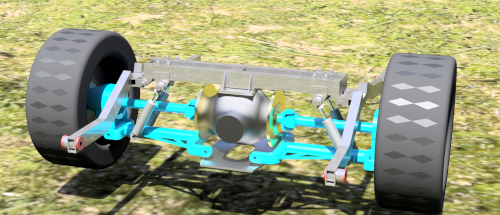
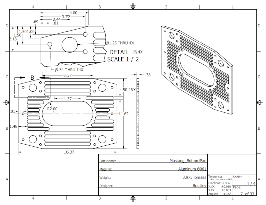
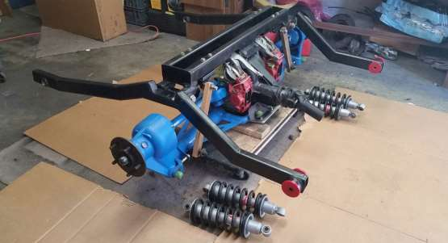
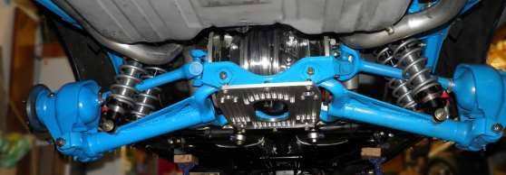

Independent Rear Suspension
1968 Mustang
December 2015 // Maple Valley, WA
One of the mentors in my high school robotics club approached me junior year about his project car: a 1968 Mustang. He was converting the original rear suspension to an independent rear suspension from a 1976 Jaguar XJ12. My role was to create the CAD and technical drawings for the custom frame. In Autodesk Inventor, I took his wood mock up and realized it using welded assemblies, polyurethane bearings, the Jaguar linkages, and shocks. Care was taken to guarantee the design would not interfere with the existing body in addition to ensuring the car resting height was optimal for handling.

The following summer the CAD was fabricated and installed in the Mustang. Without fault, the design has been
road-tested under harsh, competitive autocross conditions. The customer, a Boeing Technical Fellow, said, The
performance exceeded expectations and the car (1FSTPNY) has shredded pavements from Pacific Raceway to
Bremerton Autocross
.

Furthermore, he sent the finished report to the source of inspiration for him, Peter Brock from the Original Venice Crew. Brock wrote,
Really impressive! Obviously you are an engineer! That’s a major project to take on with a now rare car that could have been destroyed in the hands of someone with lots of enthusiasm but no talent!
tags: CAD, mechanical, technical drawings